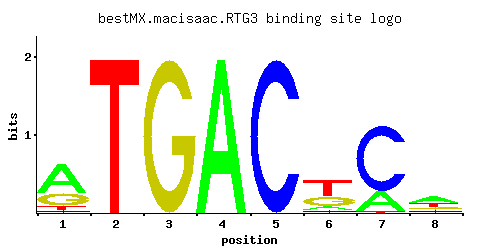

RTG3
YBL103C
Basic helix-loop-helix-leucine zipper (bHLH/Zip) transcription factor that forms a complex with another bHLH/Zip protein, Rtg1p, to activate the retrograde (RTG) and TOR pathways
Best-performing DNA-binding model.

View and copy the recommended matrices ↘
A | 0.620 0.001 0.001 0.997 0.001 0.103 0.224 0.448 C | 0.052 0.001 0.001 0.001 0.997 0.069 0.758 0.121 G | 0.259 0.001 0.997 0.001 0.001 0.310 0.001 0.190 T | 0.069 0.997 0.001 0.001 0.001 0.518 0.017 0.241
A | 62 0 0 99 0 10 22 44 C | 5 0 0 0 99 6 75 12 G | 25 0 99 0 0 31 0 19 T | 6 99 0 0 0 51 1 24
A | 0.66 -5.77 -5.77 1.14 -5.77 -1.13 -0.36 0.34 C | -1.24 -5.19 -5.19 -5.19 1.71 -0.96 1.44 -0.40 G | 0.36 -5.19 1.71 -5.19 -5.19 0.54 -5.19 0.05 T | -1.53 1.14 -5.77 -5.77 -5.77 0.48 -2.94 -0.28
Alternative candidate matrices 11
Historical matrix candidates from the original ScerTF database. Expand a source to inspect its original logo, scores, and matrix values.
RTG3_AFoat et. al.P = 2.23e-05View matrix ↘
RTG3_BFoat et. al.P = 0.001619View matrix ↘
RTG3_CFoat et. al.P = 4.65e-06View matrix ↘
RTG3_DFoat et. al.P = 0.1912View matrix ↘
RTG3_EFoat et. al.P = 2.74e-07View matrix ↘
RTG3Harbison et. al.P = 0.02126View matrix ↘
RTG3_AMorozov et. al.P = 0.0006008View matrix ↘
RTG3_BMorozov et. al.P = 1.64e-05View matrix ↘
RTG3Pachkov et alP = 0.0007004View matrix ↘
RTG3Zhu et. al.P = 0.03116View matrix ↘
RTG3Zhao and StormoP = 1View matrix ↘
Gene-level annotations and interactions.
Genes bound in ChIP-chip experiments 71 genes
YAL028W, YAL029C, YBL097W, YBR167C, YBR168W, YCR018C-A, YCR019W, YCR096C, YDL017W, YDL018C, YDL044C, YDL236W, YDL247W, YDR042C, YDR131C, YDR179C, YDR179W-A, YDR434W, YDR473C, YDR522C, YEL050C, YER002W, YER115C, YER129W, YER138C, YFL011W, YFR023W, YGL001C, YGL178W, YGR071C, YGR072W, YGR273C, YHR011W, YHR043C, YIL036W, YIL037C, YIR005W, YJL203W, YJL204C, YJR088C, YJR089W, YJR108W, YKL071W, YKL177W, YKL179C, YKR004C, YKR009C, YKR061W, YKR089C, YKR090W, YKR103W, YLR105C, YLR125W, YLR276C, YLR316C, YLR318W, YLR322W, YLR363C, YLR364W, YMR049C, YMR098C, YMR193W, YMR258C, YNL009W, YOL144W, YOL145C, YOR058C, YPL124W, YPL208W, YPL209C, YPR197C
Genes affected by TF deletion 245 genes
YER145C, YER178W, YHL016C, YIL116W, YKR039W, YOR225W, YOR227W, YDL131W, YGL009C, YHR146W, YLR027C, YLR029C, YGL231C, YHL047C, YLR217W, YMR009W, YOL016C, YOR220W, YOR226C, YGR120C, YLR089C, YLR061W, YLR435W, YOR036W, YOR382W, YPR138C, YDR342C, YDR098C, YDR100W, YFR003C, YHR053C, YHR055C, YIR034C, YKL016C, YJR149W, YLL034C, YMR105C, YNL147W, YOL136C, YPR184W, YAR064W, YAR068W, YBL027W, YDR339C, YER056C-A, YER030W, YHR208W, YIL052C, YLR154C, YMR284W, YMR314W, YMR316W, YBR061C, YBR129C, YFR004W, YKL011C, YLL002W, YLR304C, YMR072W, YMR074C, YMR135C, YNL142W, YOL139C, YOL109W, YOR086C, YBL026W, YDL191W, YDR279W, YER029C, YGL106W, YKL206C, YLR119W, YML024W, YMR255W, YNL302C, YPL111W, YPL081W, YKR022C, YNL030W, YOR261C, YOR203W, YFR044C, YKL119C, YLR038C, YOR385W, YBL092W, YDR071C, YDR077W, YIL117C, YNL055C, YNL090W, YOR198C, YOR230W, YOR202W, YJR148W, YLR200W, YBR164C, YDL135C, YDL075W, YEL051W, YJL126W, YLR438W, YOR010C, YOR046C, YMR145C, YOL118C, YOL150C, YOR327C, YOR357C, YBR297W, YHR214W, YLR194C, YMR260C, YPL090C, YPL154C, YBR101C, YBR105C, YDL012C, YDR167W, YDR139C, YGR012W, YHR030C, YJR119C, YJR150C, YMR112C, YMR142C, YOL143C, YOL149W, YOR298C-A, YPL273W, YBL028C, YCL025C, YDL201W, YER035W, YGR253C, YHR214W-A, YKL214C, YLR195C, YML063W, YML094W, YML095C-A, YMR321C, YNR001C, YNR003C, YPL117C, YPL091W, YBL103C, YCL074W, YER131W, YHR010W, YIL094C, YKR093W, YML131W, YOL058W, YBR207W, YDL082W, YDR210W, YGR136W, YLR416C, YLR420W, YMR178W, YNL255C, YOR051C, YOR021C, YLR262C, YLR292C, YLR294C, YNL064C, YNL096C, YNL037C, YOL032W, YOR210W, YAR018C, YDR209C, YGR135W, YGR137W, YKL120W, YLR075W, YMR241W, YOR052C, YBR082C, YBR084C-A, YCR097W, YDR112W, YFL028C, YGR019W, YHR071W, YKL030W, YKL001C, YMR120C, YOL126C, YOR333C, YOR383C, YJL167W, YLR136C, YMR300C, YCR096C, YDR111C, YDR481C, YOL119C, YCL031C, YDL241W, YER100W, YKL216W, YLR167W, YNR044W, YPL129W, YDR032C, YLR299W, YOR277C, YPL199C, YBR181C, YDL120W, YDR272W, YEL065W, YFR056C, YGL031C, YGR146C, YGR148C, YMR184W, YOR089C, YCR005C, YOR276W, YDL215C, YBR244W, YFR055W, YLR421C, YPL075W, YFL034C-A, YGR085C, YDL182W, YIL076W, YPL134C, YDR151C, YLR359W, YOR306C, YOR374W, YBR278W, YER073W, YGL098W, YJL200C, YKL160W, YNL007C, YNR050C, YOR184W
Genes supported by both experiments 1 genes
YCR096C
Predicted TF–TF partners 8 genes
ACA1, BAS1, GCN4, MBP1, RSC3, STB5, SWI4, SWI6